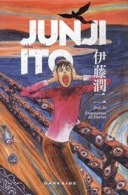

Fragmentos do Horror
FRAGMENTOS DO HORROR é uma coleção de histórias curtas, perfeitas para quem quer experimentar o que essa mente tão delirante é capaz de produzir. Ito-san oferece ao leitor nove encontros com o desconhecido. Cada quadrinho pode ser fatal, cuidado!
Entre as histórias da coletânea, temos uma mansão velha de madeira que gira sobre seus habitantes. Uma turma de dissecação com um assunto nada comum. Um funeral em que os mortos definitivamente não são postos para descansar. Variando do aterrorizante ao cômico, do erótico para o repugnante, essas histórias apresentam o retorno de Junji Ito há muito aguardado para o mundo do horror.
